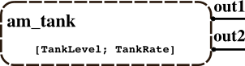

HYBRID ATOMIC PDEVS am_tank
stored in DEVS_PATH/01-atomic-modelbase/orange_juice_canning/tank.m
Contents
Description
Class definition file for an hybrid atomic PDEVS model that implements a tank.

constructor call: obj = am_tank(name,inistates,c_inistates,elapsed)
Superclass
hybridatomic (superclass acts as associated hybrid simulator)
Class Methods
characteristic functions:
- ta = tafun(obj) : time advance function - calculates time until next internal event by evaluating the states in s
- deltaconffun(obj,gt) : confluent function - calculates from states s, inputs x and elapsed time elapsed the new states s', if there is an internal and an external event at the same time
- deltaextfun(obj,gt) : external transition function - calculates from states s, inputs x and elapsed time elapsed the new states s'
- deltaintfun(obj) : internal transition function - calculates from states s the new states s'
- lambdafun(obj) : output function calculates from states s the ouptputs y
- dq = f(obj,gt,x,y): rate of change function - returns derivations
- ret = cse(obj,gt,y): state event condition function - checks, if there are events
- deltastatefun(obj,gt,y,event_number): state event transition function - describes the reaction on state events
- cy = lambda_c(obj,gt,y): continuous output function
display functions:
- showall(obj) : display the object
- showxports(obj) : display x-ports and values
- showyports(obj) : display y-ports and values
- showstates(obj) : display states in s
- showsysparams(obj): display system parameters in sysparams
- showcontstates(obj): display continuous states
Inherited Properties
inherited from atomic:
- name : string, (unique) name of this model --> for debugging purposes max. 12 characters for "nice" debug-look ;-)
- x : structure, set of inport name/input value pairs
- y : structure, set of outport name/output value pairs
- s : structure, set of states
- sysparams : structure, set of system parameters, can be set only once at instantiation
- elapsed : float, time elapsed since last transition (only for initialization)
- debug_flag: 0|1|2|3, no messages|messages|steps|visualize x, y, and s (default 0)
- observe_flag: 0|1, log states of atomic subcomponents or not (default 0)
- observed : cell array including time stamps and a copy of s (structure of states)
inherited from hybridatomic:
- c_states: vector of continuous variables
- output_length : length of output-vector returned by lamda_c
- mealy: 1 or 0, model is of mealy or moore type
Ports
has no inputs x
has two outputs y: out1 and out2, 1 to send signals to trucks, one to send signals to canning process
Note: continuous couplings need no ports. They are managed via continuous variables' indices.
States
discrete in s:
s.sigma: for time advance
s.filling_suspended: 0 or 1, 1 if unloading is allowed, 0 if not
s.event_type: 'stop_filling' or 'continue_filling' or 'stop_canning'
continuous:
c_states = [TankLevel; TankRate]
Hybrid Characteristics
mealy = 1: model is of Mealy type
output_length = 1: the function lamda_c returns 1 element
state events:
- if filled with 6000 gallons,
- if sunk to 5500 gallons,
- if empty
System Parameters in sysparams
none
More
global SIMUSTOP : can be used to stop allover simulation
DEVS Tbx Home Examples Modelbase << Back